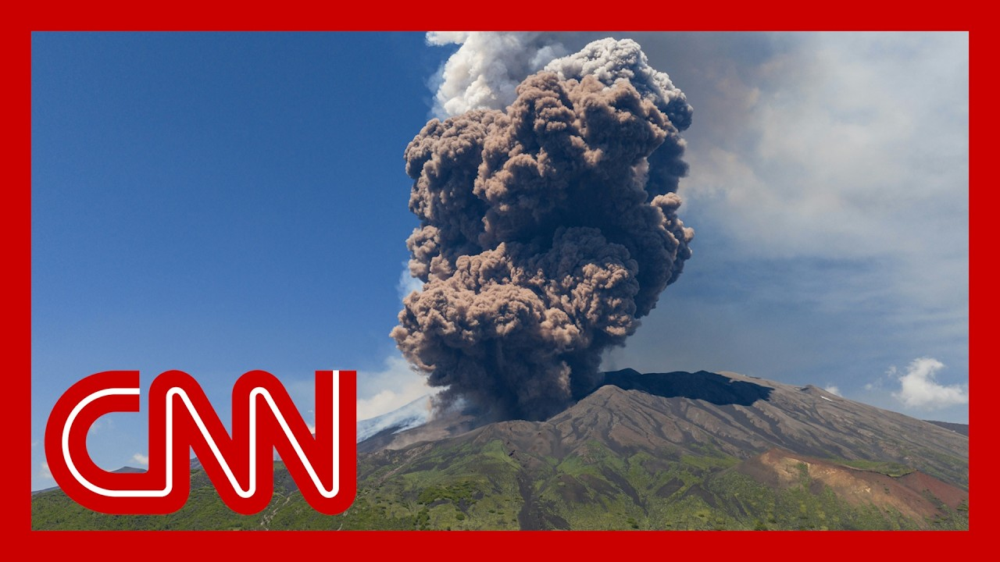

【视频显示埃特纳火山喷发，游客慌忙逃生】
Summary: Mount Etna erupted, causing tourists to flee; ash plumes and explosions were observed, and authorities warned aircraft to avoid the area.
摘要： 埃特纳火山喷发导致游客逃离；观察到火山灰羽流和爆炸，当局警告飞机避开该区域。

⏱️ Estimated Reading Time: 6 min
Italy's Mount Etna has started erupting again earlier today, sending panicked tourists running for safety.
意大利的埃特纳火山今天早些时候再次喷发，惊慌的游客纷纷逃命。
Take a look at these images and when you the I to put this all.
看看这些画面，以及当你我整理这一切时。
Officials say the eruption sent a plume of ash and rocks several kilometers high into the sky.
官员称喷发将火山灰和岩石喷至数公里高的空中。
And you can see those images date as tourists running and producing explosions that could be heard up to 50km or 30 miles away.
你可以看到这些画面中游客奔跑，喷发产生的爆炸声在50公里或30英里外都能听到。
The Sicilian Civil Protection Agency is warning all aircraft to avoid the area.
西西里民防机构警告所有飞机避开该区域。
CNN's Bobby Nadeau is following the story for us from Rome.
CNN的Bobby Nadeau在罗马为我们跟进报道。
I mean, these images are have to say, pretty scary.
我是说，这些画面不得不说相当可怕。
And you can see the the tourists reacting, trying to run away.
你可以看到游客们的反应，试图逃跑。
Do we know anything about evacuations at this point in terms of danger that it could pose to neighboring villages?
关于疏散，目前是否知道对周边村庄可能构成的危险？
Yeah.
是的。
You know, these villages that are up and down the flanks of Mount Etna are used to this kind of activity.
你知道，埃特纳火山山坡上下的村庄对这种活动已经习以为常。
And so, you know, they're they're not easily terrified from, from the mountain, from the erupting mountain.
所以，他们不会轻易被喷发的火山吓到。
But they will have to evacuate them if there is intense activity that's continuing in the observatory.
但如果观测站监测到持续强烈活动，他们将不得不疏散。
That keeps a close eye on this, so that they feel that the the activity is intensifying and they can't be sure when it will calm down.
他们密切关注，感觉活动正在加剧，但无法确定何时会平息。
But they did evacuate, you know, tens of tourists, all these groups of tours we talked to, one tour operator had 40 people up there, and they were able to get all of them off.
但他们确实疏散了数十名游客，我们交谈的旅行团中，一个运营商有40人在山上，他们成功将所有人带离。
And there are maybe a dozen, tour operators, we were told, running operations at the time.
我们被告知，当时可能有十几家旅游运营商在运营。
Also important to note, this is a long holiday weekend.
还需注意的是，这是一个长假期周末。
Today's a national holiday here, so there would have been even more people, and and kids up there too.
今天是这里的国定假日，所以山上会有更多人，包括孩子。
But, you know, they got everyone to safety off the mountain.
但他们成功将所有人安全带离山区。
But no one who was up there was expecting, this sort of intense explosion.
但山上没人预料到这种强烈爆炸。
Usually what we see, from it is a more fiery lava flows.
通常我们看到的是更猛烈的熔岩流。
And we've been seeing an intensity of that over the last couple of months, too.
过去几个月我们也看到了这种强度的活动。
So this was a surprise to everyone.
所以这对所有人都是意外。
And it was heard, you know, so far away they haven't had to close the airport in Catania yet because the wind is favorable.
喷发声传得很远，但由于风向有利，卡塔尼亚机场尚未关闭。
But the minute or if that wind switches direction, they'll have to close the airport because that plume of smoke so many kilometers up is really hazardous to aircraft.
但如果风向改变，他们将不得不关闭机场，因为数公里高的烟羽对飞机非常危险。
Really?
真的吗？
I mean, the reality is that Mars Etna is one of the most active volcanoes, in the world.
我是说，事实上埃特纳火山是全球最活跃的火山之一。
And it's I mean, it's such a short ride if you're a tourist.
对游客来说，路程很短。
I saw some people taking videos and photos, but it is dangerous.
我看到一些人拍摄视频和照片，但这很危险。
And there's a real process in terms of monitoring, and ensuring that its activity is, under control in some way.
监测和确保其活动某种程度上受控是一个真正的过程。
You know, and there's also a lot of seismic activity of these earthquakes.
你知道，还有很多地震活动。
You know, I've been up Etna many, many, many times over the last ten, 15 years.
过去10到15年里，我多次登上埃特纳火山。
And it is always a magical experience.
每次都是神奇的经历。
It is just amazing.
非常惊人。
And you can take some of these tours.
你可以参加一些旅行团。
It takes you very close to the, to the top, where you have to wear special shoes because the ground is so hot, but it is really, really dangerous.
它会带你非常接近山顶，由于地面极热需穿特殊鞋子，但这非常危险。
And I think, you know, there are so many tour groups that bring people up because they just want to get close to this incredible, you know, force of nature.
我认为很多旅行团带人上山，因为他们想接近这种不可思议的自然力量。
we're so constantly reminded that it's very unpredictable.
我们不断被提醒它非常不可预测。
And, you know, they've been watching the seismic activity.
他们一直在监测地震活动。
What's interesting.
有趣的是。
So there wasn't an increase of seismic activity in terms of earthquakes, where we had seen, there were some eruptions in January that that led to these incredible lava sprays.
地震活动并未增加，而一月份的一些喷发曾导致惊人的熔岩喷溅。
And there had been, more earthquakes and seismic activity ahead of those.
那些喷发前有更多地震和地震活动。
So, you know, people are looking at, at the data, trying to understand what the projections are.
所以人们研究数据，试图理解预测。
you can't predict an eruption of an earthquake or an eruption of a volcano or, the intensity or when an earthquake will happen.
你无法预测地震或火山喷发，或强度，或地震何时发生。
So all of this is really up to looking at trends and studying the data and hoping that they're making the right, future calls.
所以这一切都取决于观察趋势、研究数据，并希望他们做出正确的未来判断。
Absolutely.
确实。
Bobby Majo, thank you so very much, for that update.
Bobby Majo，非常感谢你的更新。
interesting pictures there from Sicily, Mount Etna.
来自西西里埃特纳火山的有趣画面。